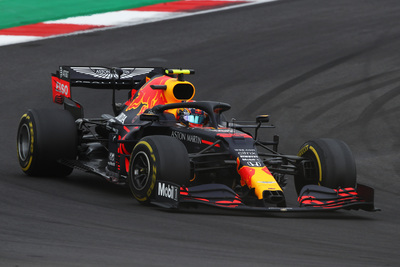
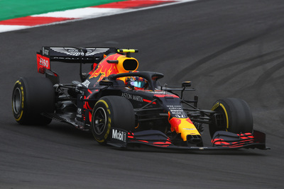

Red Bull Racing History
2005: Red Bull-Ford Cosworth, and the RB1
Red Bull Racing were formed in 2005 when the Jaguar team (formerly Stewart) was purchased for the sum of US$1 by the Austrian drinks giant Red Bull. A management team was put in place featuring Arden International Motorsport team principal, Christian Horner, as team boss. The team continued the existing partnership with Ford who provided their Ford Cosworth TJ2005 engine to power the RB1, Red Bull's first car as a constructor. Also retained was Christian Klien, now partnered by David Coulthard. On four occasions, Klien was replaced by Vitantonio Liuzzi, an arrangement made between the drivers before the season had begun. This arrangement produced moderate success in 2005, ending the season in 7th place with 34 points, an improvement of 24 points on the last Jaguar season in 2004. At the end of 2005, the partnership with Ford was terminated, as the team signed a one-year deal with Ferrari for 2006.
2006: Red Bull-Ferrari
For 2006, a deal was struck between Red Bull Racing and Ferrari to provide the team with their new V8-spec Ferrari 056 engine for one season. This engine was the same one used by Ferrari for the season. The partnership was not as successful, as drivers Coulthard and Klien (the latter later replaced by Robert Doornbos) managed only 16 points. The highlight of season, however, was a third place finish for Coulthard at the 2006 Monaco Grand Prix, an achievement which lead to the Scotsman wearing a Superman cape on the podium, followed by team boss Christian Horner being thrown into the team's swimming pool in only a red cape. By the end of the season, the team had amassed only 16 points from just seven points-finishes, ending the season in 7th place.
2007-2015: the Red Bull-Renault era
2010: The First Championship In 2010, Red Bull upgraded to their most successful chassis yet, the RB6. The driver line-up remained unchanged which, alongside the new car, proved to be a winning combination. The 2010 season was wide open from the start, with 5 drivers sharing the first seven race wins. Red Bull's start to the season was a slow one, with only 2 podium finishes in the first 4 races, but by the sixth round in Monaco they were leading both championships. From then onwards, both Vettel and Webber performed well, and by the final race of the season, the team had secured 8 wins, four 1-2 finishes, and the Constructors' title - the first in their history. One race later, with four drivers battling for the title, Sebastian Vettel won the Drivers' Championship with victory in 2010 Abu Dhabi Grand Prix. Vettel's title gave the German the record as the youngest ever Driver's World Champion. 2011: The Second Championship Compared to 2010, the 2011 season was much more comfortable for Red Bull. Sebastian Vettel dominated the season, winning 11 races, and a total of 17 podium finishes, all from the front row of the grid, except in Germany where he started 3rd. Vettel secured the Drivers' title with 4 races to spare in Japan, and the team claimed the Constructors title one race later. 2012: The Third Championship The 2012 season proved to be much closer than the previous season. The season started well with second (Vettel) and fourth (Webber) at the first race of the season, giving the team an early second place in the Constructors' standings. The first 7 races of the season were won by seven different drivers which left both championships wide open. However, a string of consistent results placed the Red Bull team at the top of the standings from the 2012, a lead which they held ever since. 2013: The Fourth Championship The 2013 season was one of Red Bull's most successful yet, with Vettel winning the last nine races of the season and clinching the title in round 16 of 19 at the Indian GP. He finished 155 points ahead of runner-up Fernando Alonso. This was both Vettel and Red Bull's fourth consecutive title. Webber won no races at all in his final season of F1 before moving back to sports cars for 2014, his best finish being five second place finishes in Malaysia, Britain, Japan, Abu Dhabi and Brazil but only because he was cruelly denied the victory in Malaysia by his team order-ignoring team-mate who refused to let the Australian overtake. Nonetheless he finished third in the drivers' championship.
2019-2021: the Red Bull-Honda era
2021 In 2021, Red Bull continued with Max Verstappen and swapped out Alexander Albon for Sergio Pérez, coming from Racing Point. This year saw the Austrian team fight for the Constructors' and Drivers' championship with Mercedes, which Max Verstappen won against Lewis Hamilton, but the German team succeeded at the Constructors', which saw Red Bull finish second. Max Verstappen, with 10 poles and 10 wins, won the Drivers' Championship for the first time in his career and being the first Dutch world champion, beating Lewis Hamilton who was in his search for an 8th title, which would break Michael Schumacher's record of seven titles. This was Red Bull's first Drivers' championship since 2013, where Sebastian Vettel dominated the field for four consecutive seasons between 2010 and 2013. In his first year with Red Bull, Pérez did a decent job for the team, where we saw him helping Verstappen in the most critical moments. The Mexican driver secured five podiums, including a podium at his home race, and a win in Azerbaijan. But after some unfortunate DNF's and bad results, Red Bull didn't have opportunity at the Constructors'. This was the last season where Honda was Red Bull's engine supplier.
2022-present: the Red Bull Powertrains era
2022 At the car launch for the RB18, the team announced a new five-year title sponsorship with Oracle, an American multinational computer software company.

 
